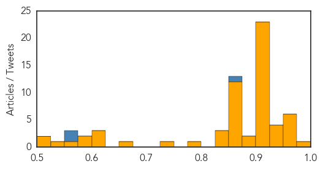

Mumps
30-Day Web Trend
0 alerts, 0 warnings

30-Day Twitter Trend
0 alerts, 0 warnings

Article Locations

Article Confidences

Top Articles:
Top Tweets:
-
No tweets found for Oct 17, 2014
Unknown
30-Day Web Trend
0 alerts, 0 warnings
30-Day Twitter Trend
2 alerts, 0 warnings
Article Locations
Article Confidences
Top Articles:
- 0.982
- Anthrax case in western Kazakhstan. Health. Tengrinews.kz
- 0.975
- Flu season is here, enterovirus may follow
- 0.975
- Doctors advise steps to prevent conjunctivitis
- 0.964
- One dies of Crimean-Congo Haemorrhagic Fever, six people infected, says Oman's health ministry
- 0.964
- Asthmatic first to die from enterovirus in Canada
- 0.956
- B.C. man first known fatality linked to enterovirus D68 in Canada
- 0.951
- Public Health Announcement
- 0.948
- Massachusetts’ nurses fight mandatory flu shots
- 0.943
- Enterovirus kills young B.C. man
- 0.939
- Young girl treated for Enterovirus D-68 in Berrien County
- 0.928
- Germany Steps up Measures to Keep out African Swine Fever
- 0.917
- Chicago Tribune
- 0.917
- Chicago Tribune
- 0.917
- Chicago Tribune
- 0.917
- Chicago Tribune
- 0.917
- Chicago Tribune
- 0.917
- Chicago Tribune
- 0.917
- Chicago Tribune
- 0.917
- Chicago Tribune
- 0.917
- Chicago Tribune
- 0.917
- Chicago Tribune
- 0.917
- Chicago Tribune
- 0.917
- Chicago Tribune
- 0.917
- Chicago Tribune
- 0.917
- Chicago Tribune
- 0.917
- Chicago Tribune
- 0.913
- B.C. man dies after contracting enterovirus D68
- 0.913
- Man dies from Enterovirus
- 0.912
- Few details released on identities of enterovirus patients
- 0.910
- The world windows to Thailand
- 0.910
- The world windows to Thailand
- 0.910
- The world windows to Thailand
- 0.910
- The world windows to Thailand
- 0.910
- The world windows to Thailand
- 0.889
- Five-month-old baby boy 'dies from enterovirus' after failing to wake up from his afternoon nap
- 0.879
- Mississippi reports 1st flu case of season
- 0.868
- Eastern Equine Encephalitis found in Sanbornton horse
- 0.866
- Eye of Hurricane Gonzalo over Bermuda -U.S. National Hurricane Center
- 0.866
- Tropical Storm Ana is seen approaching Hawaii in the Central Pacific Ocean
- 0.866
- U.S. launches six air strikes near Kobani -military
- 0.866
- Putin says current oil price no tragedy for Russia's budget
- 0.866
- Putin says he and Poroshenko agreed on gas supplies "at least for winter"
- 0.866
- Markets are in correction, perhaps over-reacting
- 0.866
- Obama names former White House official Klain Ebola 'czar'
- 0.866
- Ukrainian president says "not very optimistic" about crisis
- 0.866
- U.N. Syria envoy to visit Russia next week
- 0.866
- Putin's talks with Ukraine and EU are "difficult"
- 0.866
- Putin to hold more talks with Ukraine, EU leaders on Friday
- 0.835
- CDC Denies Any Enterovirus D-68 Outbreak Link To Illegal Alien Kids
- 0.830
- B.C. man first known fatality linked to enterovirus D68 in Canada
Showing top 50 articles...
Top Tweets:
- 0.854
- Unless you have been in contact with a confirmed person, flu-like symptoms will most likely be flu.
- 0.796
- 3 horas en esta mierda de luz 🚦
- 0.751
- Flu Fact Friday: The flu virus attacks the body by spreading through the upper and/or lower respiratory tract. http://t.co/3kSj8Vycaa
- 0.596
- El legado de la inoperancia y de las mafias: El crimen organizado nunca tuvo mejores dÃas en nuestro paÃs. C... http://t.co/KnRI1uLpVn
- 0.572
- For the virus to spread, a person would have to have direct contact with an infected individual experiencing symptoms.(2/2)
- 0.547
- Viernes de NO cocinar 🎉🎉🎉
- 0.506
- Oscura noche gumarela: River Plate venció 3-1 a Libertad en el juego de ida por octavos de final de la Copa Su... http://t.co/nMYZX5QiJW